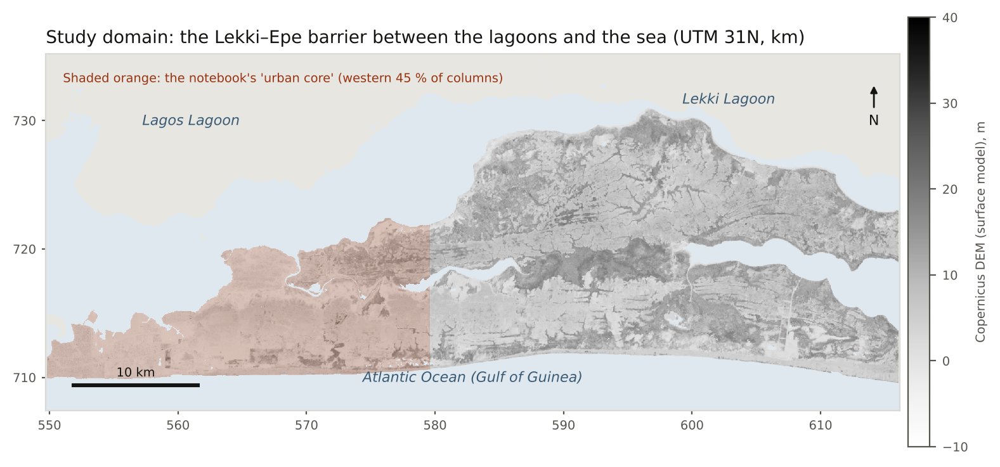
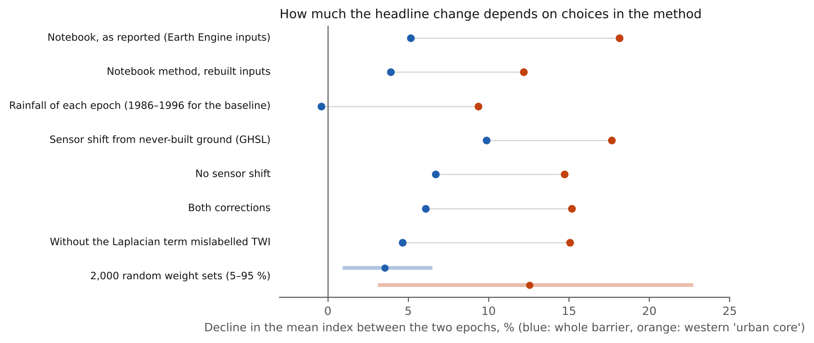
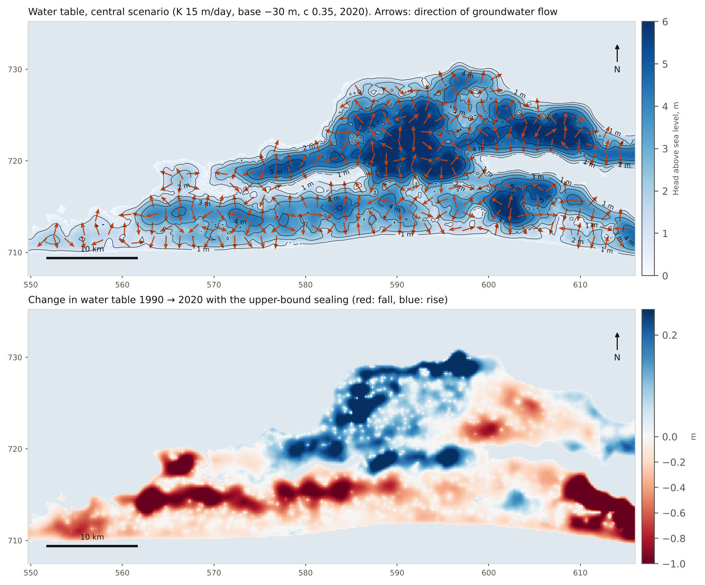

Urban sealing and groundwater on the Lekki–Epe barrier, Lagos
Satellite images show the western Lekki–Epe barrier sealing over between the late 1980s and 2024. This page asks how much that could matter for the shallow groundwater beneath it, using only open data and a groundwater model run as scenarios.
Question and setting
The barrier between the Lagos and Lekki lagoons and the Atlantic is a strip of coastal sand about — km² in the study grid. Rain falling on open sand soaks in and recharges a shallow water table; rain falling on roofs and roads mostly runs off. Two questions follow:
- How much has the land surface sealed over since the late 1980s, and how reliable is the satellite evidence?
- What could that sealing do to the water table, given what is and is not known about the aquifer?

Data and method
| Input | Use |
|---|---|
| Landsat-5 TM, 1986–1996, November–March (— scenes) | Earlier land surface: built-up (NDBI) and vegetation (NDVI) indices |
| Sentinel-2 L2A, November 2023–March 2024 (— scenes) | Later land surface, same indices |
| Copernicus DEM GLO-30 | Slope and surface shape; model top. It is a surface model that includes buildings and trees |
| CHIRPS v2.0 rainfall, 1986–1996 and 2019–2023 | Rainfall of each epoch |
| GHSL built-up surface R2023A, 1990 and 2020 | An independent record of built area, used to check the satellite signal and as one estimate of sealing |
| MODFLOW 6.6.3 with FloPy | Steady-state groundwater model, one unconfined layer, 150 m cells |
All inputs were rebuilt from Microsoft Planetary Computer and the data providers, because the Earth Engine export the original notebook read was never stored. The scripts are in code/pipeline/ and run in order.
1. The satellite evidence for sealing
The original study combined five layers into a recharge-potential index with fixed weights and reported its decline. Rebuilt with the same method, the index falls by — % over the whole barrier and — % in the western core; the notebook reported — % and — % from its Earth Engine inputs. About — % of the change comes from the built-up term; the terrain terms are the same in both epochs.
How large the decline is depends on choices. Using the rainfall of each epoch instead of 2019–2023 for both removes the basin-wide decline (a rise of — %, because 1986–1996 was drier) but leaves a — % decline in the core. With both corrections the declines are — % and — %. Across 2,000 random sets of weights the core decline ranges from — to — % (5th–95th percentile); it is never zero.

The satellite signal agrees with an independent record. Over — blocks of 300 m, the index falls where GHSL maps new buildings (Spearman ρ —), and GHSL's built-up share of the core rose from — % in 1990 to — % in 2020. But the built-up index also reads bright bare sand as built: about — km² scores as built-up in 2024 where GHSL maps no buildings.
2. What sealing could do to the water table
The model treats the barrier as one unconfined sand aquifer drained by the lagoons and the sea (fixed at sea level) and by seepage where the water table reaches the ground. Recharge is a fraction of the rain falling on unsealed ground. Because the aquifer's conductivity, thickness and the recharge fraction are not known here, each was varied: conductivity 5, 15 and 40 m/day, base at −30 or −60 m, recharge fraction 0.20 or 0.35. Sealing was taken two ways: from GHSL buildings, which miss roads and paving (a lower bound), and from the index's own built-up term taken at face value, which also counts bare sand (an upper bound). All — runs converged with a water-budget error under — %.

In every scenario the water table lies close to the ground (median depth — to — m) and between — % and — % of recharge seeps out at the surface. That shallow, seeping water table absorbs much of the effect of sealing. In the western core the mean fall from 1990 to 2020 is —–— cm with GHSL sealing and —–— cm with the upper bound; locally it reaches about — m. Rainfall was a little higher in 2019–2023 (— mm a year) than in 1986–1996 (— mm), which offsets part of the sealing.

What changed from the original version
| Original claim or method | Now |
|---|---|
| 18.1 % basin-wide loss of recharge and over 45 % in the urban core (README, report) | The notebook's own output was — % and — % in an index, not in recharge; the rebuild gives — % and — %, and the basin-wide value depends on the rainfall used |
| Recharge in mm/yr = rainfall × 0.35 × index, passed to MODFLOW | The index is kept as a relative score only; the model takes recharge from rainfall and sealing, with the 0.35 coefficient as one of two scenarios |
| MODFLOW 6 input written, never run; recharge in the wrong units; no boundaries or conductivity | Model runs; units are metres and days; lagoon and sea boundaries, seepage, conductivity and aquifer base set as scenarios; checked against an analytical solution |
| "TWI" from a smoothed Laplacian | Named for what it is, a surface-curvature term; removing it changes the core decline to — % |
| Sensor matching on the eastern 30 % of the grid, assumed unchanged | That zone changed (largest decline in the domain, more GHSL buildings); matching on GHSL never-built ground tested instead |
| 2019–2023 rainfall used for both epochs | CHIRPS 1986–1996 for the earlier epoch |
| Least-cost "percolation corridor" from Epe to Lekki | Withdrawn: groundwater flows across the barrier to the lagoons and the sea (Figure 5), and a path over a surface index is not groundwater flow |
Limits
- No groundwater observations. Heads, flows and changes are model results under assumed properties; none is checked against wells.
- Sealing is bracketed, not measured. GHSL counts building footprints only; the satellite term confuses bare sand with built ground. The truth for roads and paving lies between.
- Surface model, not ground. The DEM includes buildings and trees; the model top uses a low percentile within each cell to reduce, not remove, that bias.
- Steady state. Seasonal recharge, abstraction from boreholes, drainage works, sand-filling and lagoon tides are not represented.
- No salinity. The model has no variable-density flow; it cannot say anything reliable about saltwater intrusion.
- Two epochs. The earlier imagery spans 1986–1996 and is compared with 2023–2024; nothing is said about the path between.
What would make this a hydrogeology study
- Water levels from existing boreholes or a short monitoring campaign, to calibrate and test the model.
- Aquifer tests or published borehole logs for conductivity and thickness of the coastal plain sands.
- An impervious-surface map checked against high-resolution imagery, to replace the two bounds.
- Abstraction estimates for the barrier, which likely matter more than sealing for heads in the west.
- Salinity or electrical-conductivity data, and then a variable-density model (SEAWAT or MODFLOW 6 with the buoyancy package), before any statement about saltwater intrusion.